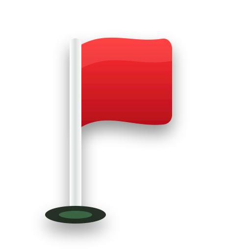

WIND
LIVE
Published map available
Location is off, so distances can't follow you. Turn it on for Clarity Caddy in Settings.
LIVE
1
PAR
COURSE MAP NOT AVAILABLE
This hole is not mapped yet
You can still use GPS manually. We'll keep checking for an updated map.
MANUAL GPS
Your location is already known.
Tap the centre of the green to set your target. Distances and your Bubble will then work normally.
MANUAL GPS · Tap centre of green

Shot logged
Score
4
HOLE COMPLETE
Hole 1
4
Par unless you say otherwise
NEXT UP
Hole 2
Playing on Watch
Phone can sleep. It keeps the round and every shot rule; the Watch draws it.
or tap where you'd stand
Hole 1
Drag the ball to where the shot finished